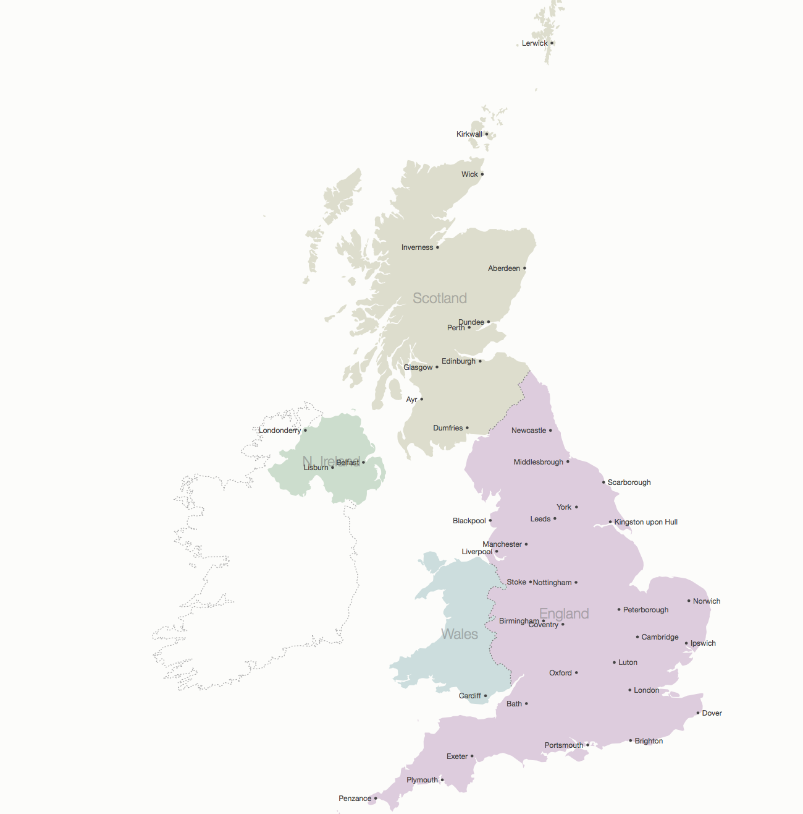
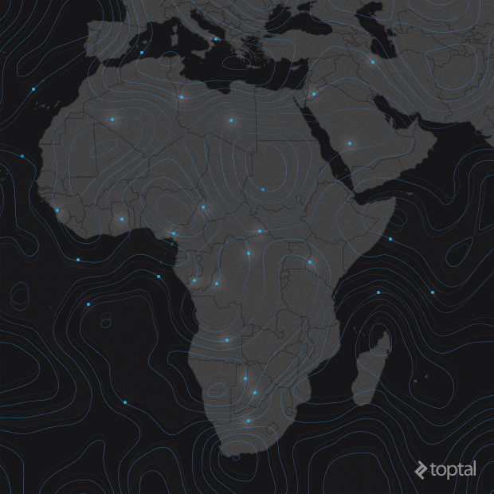
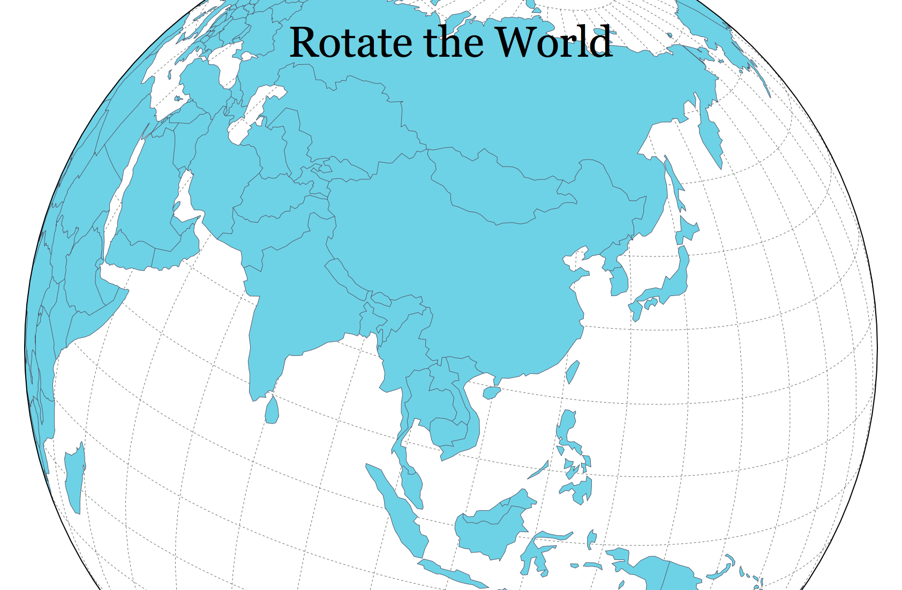
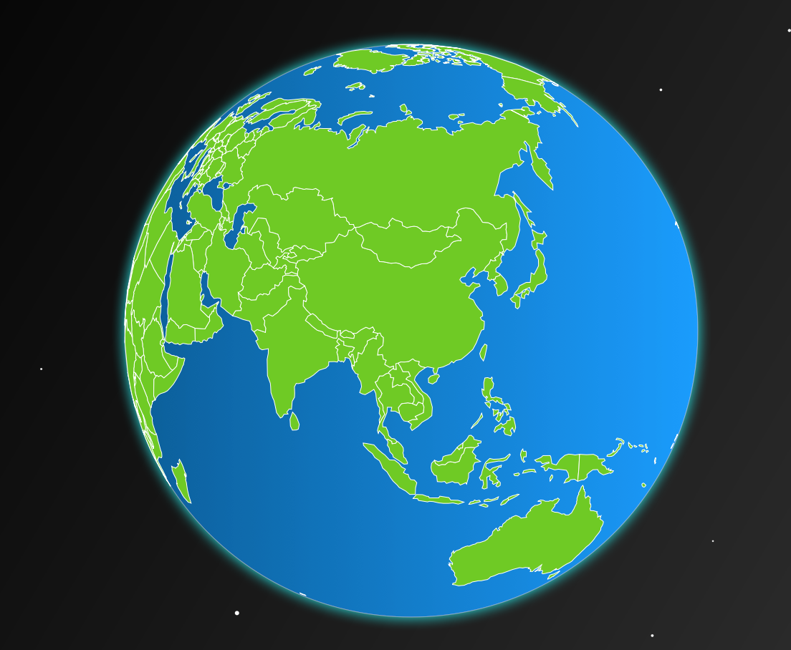

D3（有时候也叫D3 或d3.js）是一个JavaScript 库，用于创建数据可视化图形。但是这一句话不足以描述D3的功能，如它的官方文档所说，D3.js 是一个基于数据的处理文档的JavaScript库。D3可以帮你使用HTML、SVG、CSS创建可视化的数据。
D3.js得到了广泛的应用，也创建了很多非常漂亮的图形，其中之一就是和地图数据的结合。
本文不是D3的教程，所以没有多少干活，而是提供了几个展示D3可视化地图和基于地图的数据教程或者实例。之所以写这篇文章，是因为我看到了一个显示当前地球大气环流(风)的地图，包括污染物、颗粒物等地图，非常的震撼，所以特意搜索了一下D3.js创建地球地图的教程，一般都是通过D3.js + topojson生成的。
首先看Mike Bostock写的一篇教程Let’s Make a Map。
在这篇教程中，他使用d3.js+topojson创建了英国地图，同时介绍了如何获得免费地图数据以及如何转换成所需的数据格式，也介绍了如何通过css为不同的区域设置不同的颜色、显示边界、显示标签等。

第二个教程是TOMISLAV BACINGER 写的A Map to Perfection: Using D3.js to Make Beautiful Web Maps
View all articles。
这篇文章只是一个泛泛的介绍，可以参考，他介绍了D3.js和Leaflet的结合。

第三个教程是由datamaps提供，它提供了代码和数据，而且代码非常的简单，可以学习D3.js如何方便的创建地图。
第四个例子是Jason Davies实现的可拖动的世界地图，非常的漂亮。最重要的是，他提供了一个可以顺滑拖动的地球。

第5个教程是Marc Neuwirth写的Creating the Earth with D3.js,也是一个拖动的地球，很详细。

一个让人称奇的D3.js地图应用就是earth.nullschool.net,它以动画的形式实时的显示地球上的风向、洋流、波浪、污染物和颗粒物的情况。非常的震撼。它的源代码也公布在github上。
一些D3.js的教程：
- https://github.com/d3/d3/wiki/tutorials
- http://alignedleft.com/tutorials/d3
- https://www.dashingd3js.com/table-of-contents
- https://square.github.io/intro-to-d3/
- https://bost.ocks.org/mike/
一些图书：